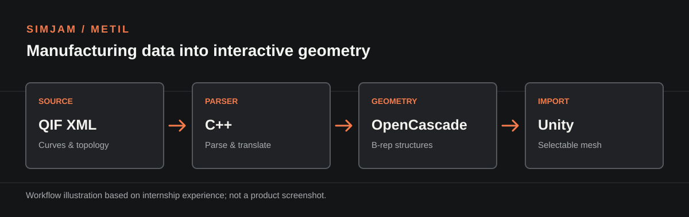

Jun — Jul 2026
Quickstart SimJam Intern
UCF Institute for Simulation and Training (METIL)
Collaborated on a QIF-to-Unity pipeline that turns manufacturing geometry and topology into selectable meshes. I implemented and debugged C++ parsing and OpenCascade translation components, working with teammates across native processing and the Unity importer.
